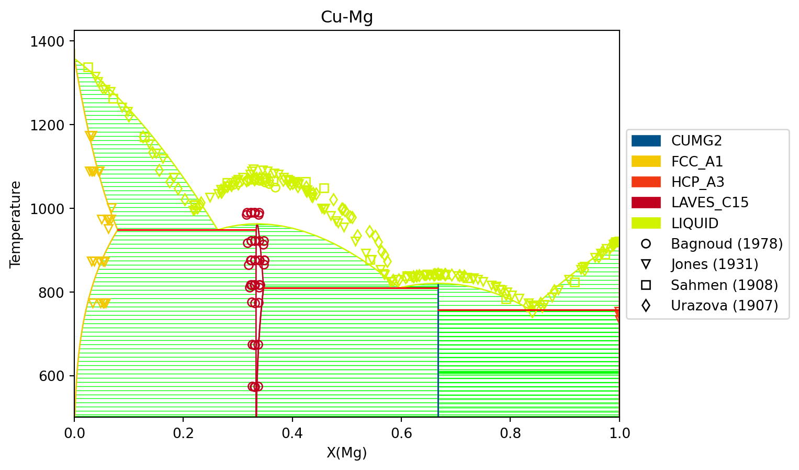
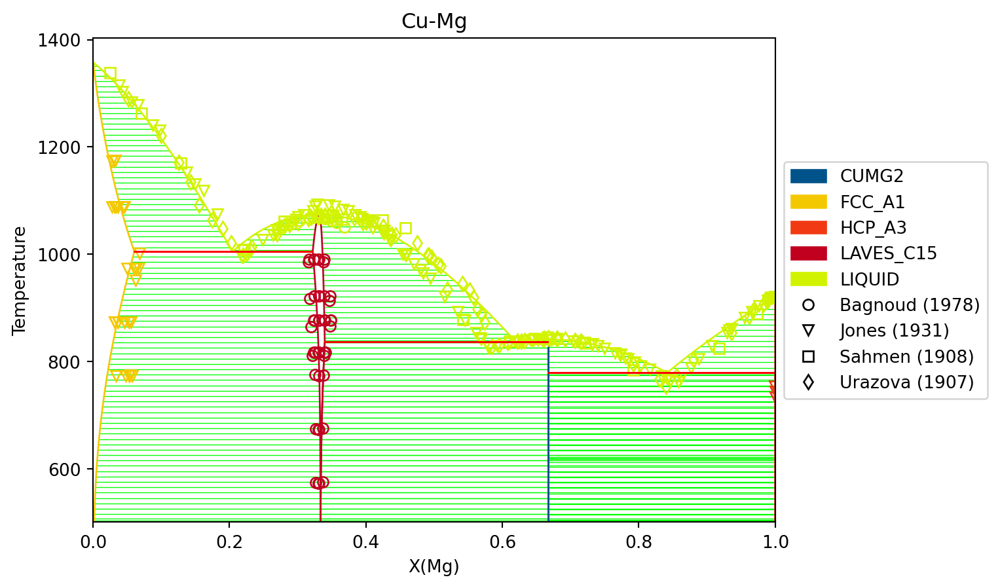
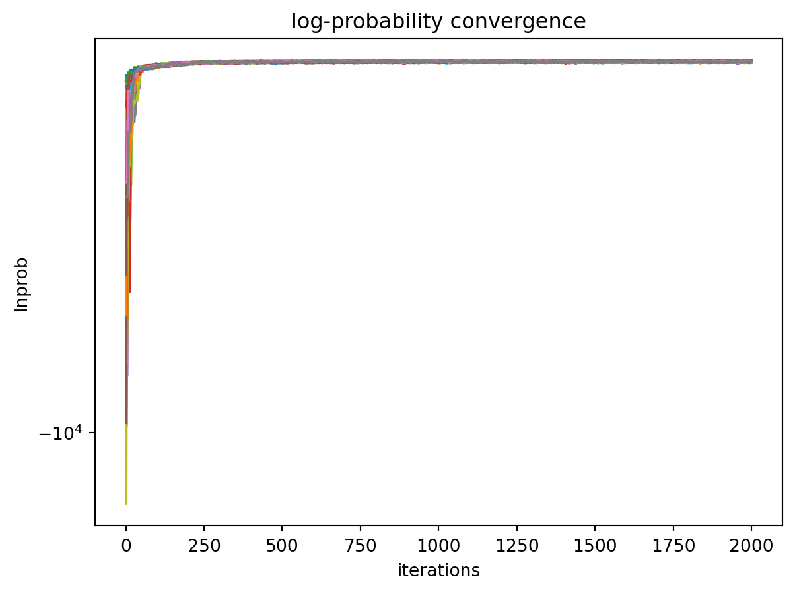
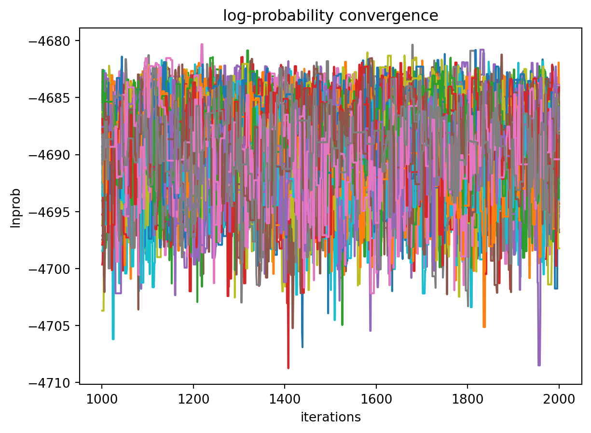
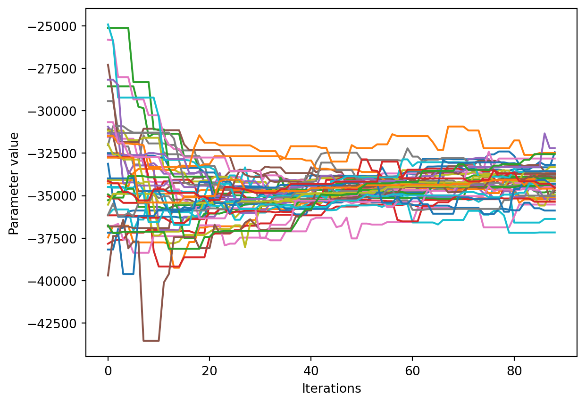
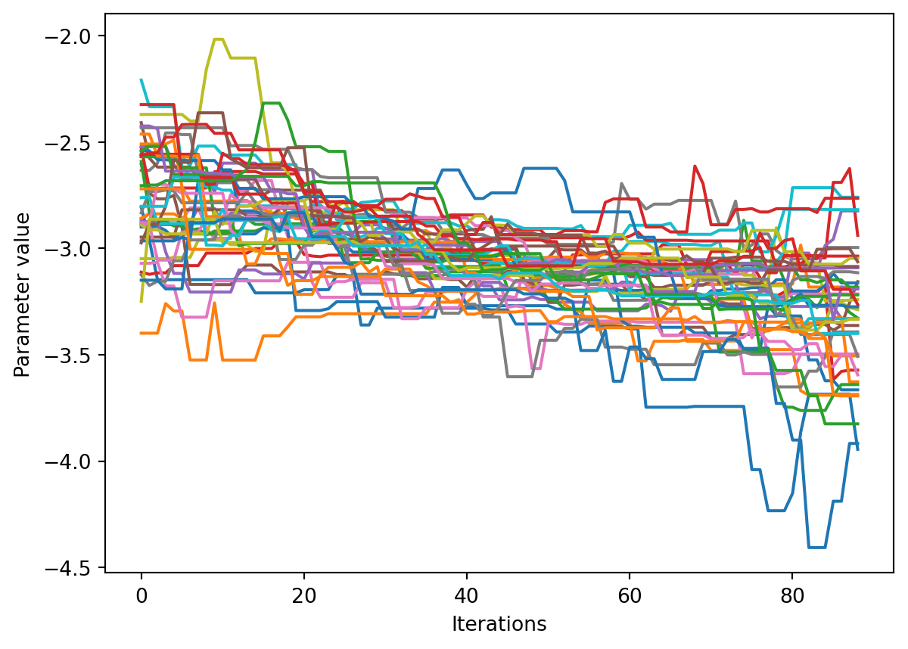
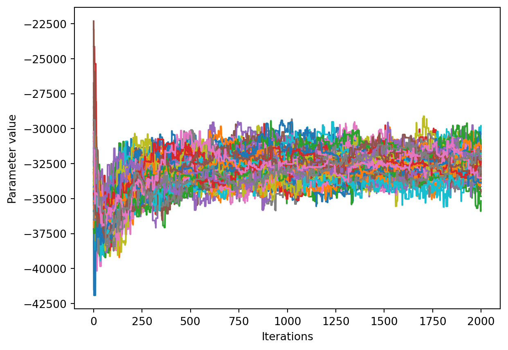

Here we will combine results from firstprinciples density functional theory calculations and experimental data for individual phases to generate a initial set of Calphad model parameters and phase diagram. Then that database will be used as a starting point for a Markov Chain Monte Carlo (MCMC) Bayesian optimization of the parameters to fit thermochemical data and phase diagram data simultaneously.
Input data
All datasets and input files for this tutorial can be found at the GitHub repository for this website in the Cu-Mg example directory. The input files will be very breifly explained in this tutorial so that you are able to know their use. More detailed description of the files is found on the relevant schema reference documentation pages.
Phases and Calphad models
The Cu-Mg system contains five stable phases: liquid, disordered fcc and hcp, the C15 Laves phase and the CuMg2 phase. All of these phases will be modeled as solution phases, except for CuMg2, which will be represented as a stoichiometric compound. The phase names and corresponding sublattice models are as follows:
ESPEI has two types of fitting -- parameter generation and MCMC optimization. The parameter generation step uses experimental and first-principles data of the derivatives of the Gibbs free energy to parameterize the Gibbs energies of each individual phase. The MCMC optimization step fits the generated parameters to experimental phase equilibria data. These two fitting procedures can be used together to fully assess a given system. For clarity, we will preform these steps separately to fit Cu-Mg. The next two sections are devoted to describing ESPEI’s parameter generation and optimization.
The datasets provided here are already well formed, but, you should get in the habit of checking datasets before running ESPEI. ESPEI has a tool to help find and report problems in your datasets. This is automatically run when you load the datasets, but will fail on the first error. Running the following commmand (assuming from here on that you are in the cu-mg-example tutorial folder from GitHub):
espei--check-datasets input-data
The benefit of the this approach is that all of the datasets will be checked and reported at once. If there are any failures, a list of them will be reported with the two main types of errors being JSONError, for which you should read the JSON section of the dataset schema, or DatasetError, which are related to the validity of your datasets scientifically (maching conditions and values shape, etc.). The DatasetError messages are designed to be clear, so please open a discussion on GitHub if there is any confusion.
Generating Calphad model parameters
By using the phase_models.json phase description for the fit settings and passing all of the input data in the input-data folder, we can first use ESPEI to generate a phase diagram based on single-phase experimental and DFT data. Currently all of the input datasets must be formation properties, and it can be seen that the formation enthalpies are defined from DFT and experiments for the Laves and CuMg2 phases. Mixing enthalpies are defined for the for the fcc, hcp, and Laves phases from DFT and for liquid from experimental measurements.
The following command will generate a database named Cu-Mg-generated.tdb with parameters selected and fit by ESPEI:
espei --input run_param_gen.yaml
where run_param_gen.yaml is an ESPEI input file with the following contents
run_param_gen.yaml
system:phase_models: phase_models.json # path to the phases filedatasets: input-data # path to the directory containing input datatags:dft:excluded_model_contributions:['idmix','mag']estimated-entropy:excluded_model_contributions:['idmix','mag']weight:0.1output:output_db: Cu-Mg-generated.tdb # what to name the output TDB fileverbosity:2 # levels of verbosity. Choose 0, 1 or 2 for Warnings, Info, or Debuggenerate_parameters:ref_state: SGTE91excess_model: linearaicc_penalty_factor:LIQUID:HM:1.4 # goal is to generate two parametersSM:1.4
The calculation should be relatively quick, on the order of a minute of runtime. With the above command, only mininmal output (warnings) will be reported. You can increase the verbosity to report info messages by setting the output.verbosity key to 1 or debug messages with 2.
With the following code, we can look at the generated phase diagram and compare it to our data.
# import everything we need in one spotimport matplotlib.pyplot as pltimport numpy as npfrom pycalphad import Database, binplot, variables as vfrom espei.datasets import load_datasets, recursive_globfrom espei.plot import dataplot# load the experimental and DFT datasetsdatasets = load_datasets(recursive_glob("input-data"))# Plot initial phase diagram with generated parameters# load database we generateddbf = Database("Cu-Mg-generated.tdb")comps = ["CU", "MG", "VA"]phases =list(dbf.phases.keys())conds = {v.P: 101325, v.T: (500, 1500, 10), v.X("MG"): (0, 1, 0.02)}# plot the phase diagram and dataax = binplot(dbf, comps, phases, conds)dataplot(comps, phases, conds, datasets, ax=ax)fig = ax.figurefig.show()

We can see that the phase diagram is already very reasonable compared to the experimental points. The liquidus temperatures and the solubilities of the fcc and Laves phases are the key differences between the equilibrium data and our first-principles phase diagram. The next section will discuss using ESPEI to optimize the parameters selected and calculated based on all the data.
Refining model parameters with MCMC
With the data in the input data directory, ESPEI generated 22 parameters to fit. For systems with more components, solution phases, and input data, may more parameters could be required to describe the thermodynamics of the specific system well. Because they describe Gibbs free energies, parameters in Calphad models are highly correlated in both single-phase descriptions and for describing equilibria between phases. For large systems, global numerical optimization of many parameters simultaneously is computationally intractable.
To combat the problem of optimizing many paramters, ESPEI uses MCMC, a stochastic optimzation method.
Now we will use our zero phase fraction equilibria data to optimize our first-principles database with MCMC. The following command will take the database we created in the single-phase parameter selection and perform a MCMC optimization, creating a cu-mg_mcmc.tdb:
espei--input run_mcmc.yaml
where run_mcmc.yaml is an ESPEI input file with the following structure
run_mcmc.yaml
system:phase_models: phase_models.json # path to the phases filedatasets: input-data # path to the directory containing input datatags:dft:excluded_model_contributions:['idmix','mag']estimated-entropy:excluded_model_contributions:['idmix','mag']output:output_db: Cu-Mg-mcmc.tdb # what to name the output TDB fileverbosity:2 # levels of verbosity. Choose 0, 1 or 2 for Warnings, Info, or Debugtracefile: trace.npyprobfile: lnprob.npylogfile: mcmc-log.txtmcmc:iterations:1000save_interval:1scheduler:null # don't parallelize, just run on one coreinput_db: Cu-Mg-generated.tdbprior:name: normalloc_relative:1.0scale_relative:1.0
ESPEI defaults to run 1000 iterations and depends on calculating equilibrium in pycalphad several times for each iteration and the optimization is compute-bound. Fortunately, MCMC optimzations are embarrasingly parallel and ESPEI allows for parallelization using dask.
Finally, we can use the newly optimized database to plot the phase diagram
# load the database from after the MCMC rundbf = Database("Cu-Mg-mcmc.tdb")comps = ["CU", "MG", "VA"]phases =list(dbf.phases.keys())conds = {v.P: 101325, v.T: (500, 1500, 10), v.X("MG"): (0, 1, 0.02)}# plot the phase diagram and dataax = binplot(dbf, comps, phases, conds)dataplot(comps, phases, conds, datasets, ax=ax)fig = ax.figurefig.show()

Analyzing ESPEI results
After finishing a MCMC run, you will want to analyze your results.
All of the MCMC results will be maintained in two output files, which are serialized NumPy arrays. The file names are set in the run_mcmc.yaml file. The filenames are set by output.tracefile and output.probfile (documentation) and the defaults are trace.npy and lnprob.npy, respectively.
The tracefile contains all of the parameters that were proposed over all chains and iterations (the trace). The probfile contains all of calculated log probabilities for all chains and iterations (as negative numbers, by convention).
There are several aspects of your data that you may wish to analyze. The next sections will explore some of the options.
from espei.analysis import truncate_arrays# load our trace and lnprob files to use in later analysis stepstrace = np.load("trace.npy")lnprob = np.load("lnprob.npy")trace, lnprob = truncate_arrays(trace, lnprob)
Probability convergence
First we’ll plot how the probability changes for all of the chains as a function of iterations. This gives a qualitative view of convergence. There are several quantitative metrics that we won’t explore here, such as autocorrelation. Qualitatively, this run does not appear converged after 115 iterations.
fig, ax = plt.subplots()ax.plot(lnprob.T)ax.set_title("log-probability convergence")ax.set_xlabel("iterations")ax.set_ylabel("lnprob")ax.set_yscale("symlog") # log-probabilties are often negative, symlog gives log scale for negative numbersfig.show()

Visualizing the trace of each parameter
We would like to see how each parameter changed during the iterations. For brevity in the number of plots we’ll plot all the chains for each parameter on the same plot. Here we are looking to see how the parameters explore the space and converge to a solution.
num_chains = trace.shape[0]num_parameters =3# only plot the first three parameters, for all of them use `trace.shape[2]`for parameter inrange(num_parameters): fig, ax = plt.subplots() ax.set_xlabel('Iterations') ax.set_ylabel('Parameter value')for chain inrange(num_chains): ax.plot(trace[chain, :, parameter])plt.show()



Corner plots
In a corner plot, the distributions for each parameter are plotted along the diagonal and covariances between them under the diagonal. A more circular covariance means that parameters are not correlated to each other, while elongated shapes indicate that the two parameters are correlated. Strongly correlated parameters are expected for some parameters in Calphad models within phases or for phases in equilibrium, because increasing one parameter while decreasing another would give a similar error.
import cornerburn_in_iterations =50fig = plt.figure(figsize=(16,16)) # this is a little condensed for the web view# flatten the along the first dimension containing all the chains in parallelcorner.corner(trace[:, burn_in_iterations:, :].reshape(-1, trace.shape[-1]), fig=fig)fig.show()

Ultimately, there are many features to explore and we have only covered a few basics. Since all of the results are stored as arrays, you are free to analyze using whatever methods are relevant.
Summary
ESPEI allows thermodynamic databases to be easily reoptimized with little user interaction, so more data can be added later and the database reoptimized at the cost of only computer time. In fact, the existing database from estimates can be used as a starting point, rather than one directly from first-principles, and the database can simply be modified to match any new data.
Acknowledgements
Credit for initially preparing the datasets goes to Aleksei Egorov.
Coughanowr, Corinne A, Ibrahim Ansara, Rauno Luoma, Marko Hämäläinen, and Hans Leo Lukas. 1991. “Assessment of the Cu-Mg System/Optimierung Des Systems Cu-Mg.”International Journal of Materials Research 82 (7): 574–81. https://doi.org/doi:10.1515/ijmr-1991-820711.
Zhou, Shihuai, Yi Wang, Frank G Shi, Ferdinand Sommer, Long-Qing Chen, Zi-Kui Liu, and Ralph E Napolitano. 2007. “Modeling of Thermodynamic Properties and Phase Equilibria for the Cu-Mg Binary System.”Journal of Phase Equilibria and Diffusion 28: 158–66. https://doi.org/doi:10.1007/s11669-007-9022-0.
Zuo, Yue, and Y. Austin Chang. 1993. “Thermodynamic Calculation of the Mg - Cu Phase Diagram.”International Journal of Materials Research 84 (10): 662–67. https://doi.org/doi:10.1515/ijmr-1993-841002.